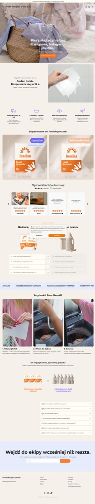
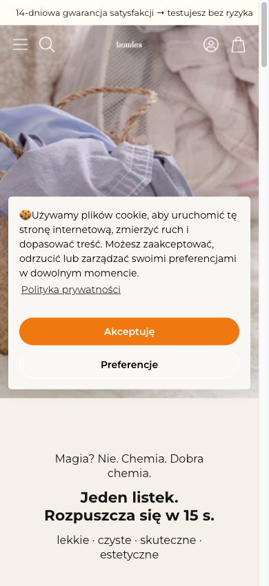
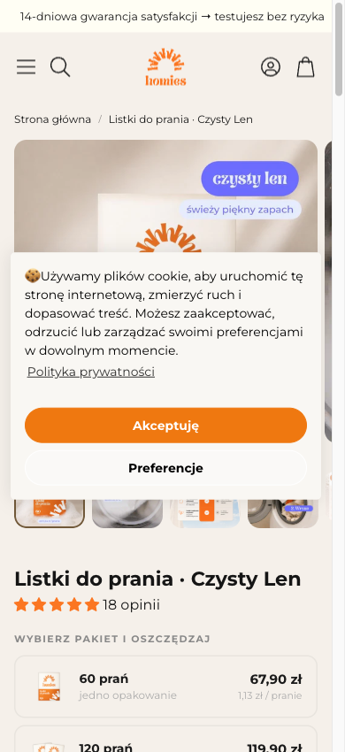
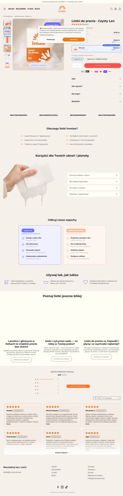
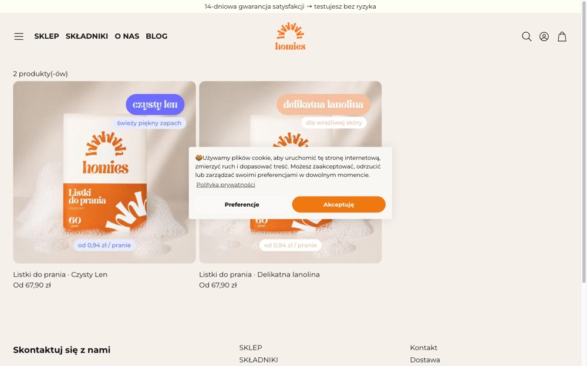

listki do prania bez plastiku · Shopify · tylko skan wizualny + struktura (bez dostępu do GA4/Clarity/Shopify klienta — to „Free/Lead" tier serwisu).
homies to jeden z lepiej zrobionych polskich sklepów eco jakie widziałem — czysty kod, mocny storytelling, świetny pricing per użycie. Problemy nie leżą w „bałaganie" (jak GLOV), tylko w kilku precyzyjnych dźwigniach przychodu: cookie wall zasłaniający hero, brak subskrypcji produktu cyklicznego, i kilka luk zaufania na PDP.
⚠️ Ocena z poziomu 1 = z heurystyk i struktury, nie z danych behawioralnych. Severity to hipoteza wpływu, nie zmierzony fakt — to potwierdza dopiero poziom 2–3 (GA4+Clarity).

Problem #1 — cookie wall na hero. Pierwsze wejście: baner cookie ląduje na środku hero, zasłaniając headline i CTA „WYBIERZ SWOJE LISTKI". User musi go odkliknąć zanim zobaczy ofertę. 3
Po akceptacji: hero jest mocny — „Piorą skutecznie bez dźwigania, bałaganu i plastiku" + benefit. Niżej świetna sekwencja: USP → produkty → opinie → porównanie → 3 kroki → edukacja → FAQ → newsletter. Kompletny storytelling.
Problem #5 — H1 pusty + brak schema na HP. Pierwszy H1 jest pusty, HP nie ma structured data. Dla eco-produktu, którego ludzie szukają w AI („ekologiczne listki do prania") — to utrata widoczności w Google/AI Overview. 2


Problem #1 mobilnie = krytyczny. Na telefonie cookie banner zasłania cały hero — pierwsze co widzi mobilny user to ściana cookie zamiast oferty. To moment największego odpływu. 3
PDP mobile (drugi screen): pakiety 60 prań / 120 prań z ceną za pranie — bardzo dobry mechanizm value. Ale cookie znów zasłania galerię, a przycisk „Dodaj do koszyka" jest dopiero pod pakietami (scroll).

Mocna PDP: galeria + akordeony (Opis / Jak używać / Dla kogo / Składniki), wybór zapachu, ikony płatności, USP bar „BEZ FOSFORANÓW / MIKROPLASTIKU / BARWNIKÓW", porównanie z tradycyjnym, blog edukacyjny, opinie 4,9.
Problem #3 — brak FAQ na PDP. FAQ jest na HP, ale nie w miejscu decyzji (PDP). Obiekcje („czy piorą w zimnej?", „ile na 1 pranie?") nieobsłużone tam, gdzie user decyduje. 2
Problem #4 — brak dostawy/zwrotów przy ATC. „14-dni gwarancja" jest w górnym pasku, ale przy przycisku zakupu nie ma progu darmowej dostawy ani czasu wysyłki — niepewność tuż przed kliknięciem. 2
| # | Problem | Gdzie | Sev | Heurystyka / źródło |
|---|---|---|---|---|
| 1 | Cookie wall zasłania hero (mobile: cały) | HP desktop+mobile, PDP | 3 | Nielsen H8 · skan wizualny |
| 2 | Brak subskrypcji produktu cyklicznego | PDP / model | 3 | biznes / LTV · struktura |
| 3 | Brak FAQ na PDP (jest tylko na HP) | PDP | 2 | obiekcje · struktura |
| 4 | Brak progu dostawy / czasu wysyłki przy ATC | PDP | 2 | LIFT: Anxiety · skan |
| 5 | H1 pusty + brak schema na HP | HP | 2 | SEO/GEO · skan |
| 6 | ATC pod pakietami na mobile (scroll do zakupu) | PDP mobile | 1 | fold · skan |
Test na nieznanym sklepie, bez żadnego dostępu, w kilka minut z URL dał: strukturę + tech stack + 6 problemów z severity + 5 testowalnych hipotez + 4 widoki ze screenami. To dowodzi, że poziom 1 („Free/Lead") realnie działa jako lead magnet — można go dać każdemu sklepowi od ręki.
Ale test obnażył też granicę poziomu 1 — i to dobrze: nie wiem, czy cookie wall realnie kosztuje sprzedaż, czy ludzie i tak konwertują. Severity to mój osąd z heurystyk, nie zmierzony fakt. To jest dokładnie argument sprzedażowy za poziomem 2–3: „dałem Ci diagnozę z samego URL za darmo — podłącz GA4 i Clarity, a powiem Ci które z tych 6 problemów faktycznie pali pieniądze i ile".
Czyli serwis przeszedł test: poziom 1 dostarcza wartość samodzielnie I naturalnie sprzedaje wyższy tier. Model trzyma się na żywym przykładzie.
— Co wiem: z bezpośredniego skanu — Shopify, 0 błędów JS, struktura HP/PDP, schema Product na PDP (brak na HP), H1 pusty HP, cena 67,90 zł / 1,13 zł za pranie, pakiety 60/120 prań, 18 opinii, cookie banner zasłania hero (4 screeny dowodowe), brak subskrypcji/FAQ-PDP/dostawy-przy-ATC.
— Co zakładam: że cookie wall szkodzi konwersji (heurystyka, nie dane); że brak subskrypcji = stracony LTV (logiczne dla produktu cyklicznego, niezmierzone); że FAQ/dostawa przy ATC podniosą konwersję (branżowy wzorzec). Severity = mój osąd.
— Co może być błędne: homies może mieć świetną konwersję mimo cookie wall (młoda marka, lojalni); subskrypcja może nie pasować do ich strategii; warianty/pakiety mój skan policzył jako 0 (zły selektor) — realnie są pakiety ilościowe; nie sprawdziłem koszyka/checkoutu ani listingu.
— Co zweryfikować (poziom 2–3): GA4 — czy bounce mobile koreluje z cookie; CR PDP vs benchmark; Clarity — czy ludzie odbijają się od cookie wall, gdzie scroll-klif; czy w danych widać powracających (popyt na subskrypcję).
— Co poprawić z jednym inputem: dostęp do GA4 homies (gdyby był) → zamieniłbym 6 hipotez na ranking „ile PLN każda warta", zamiast osądu severity.
EEL · audyt homies.com.pl · poziom 1 serwisu AI Badacz CRO/UX · 2026-06-14
Druga warstwa audytu: nie „co poprawić na guziku", tylko z kim ten sklep naprawdę walczy i czy to komunikuje. (Audyt CRO/UX → osobny plik AUDYT_homies.html)
Najkrócej: homies sprzedaje produkt, a powinien wygrywać wojnę z nawykiem.
Strona pokazuje „jesteśmy ładni i eco" — ale prawdziwy przeciwnik to nie inne listki, tylko butelka Persila pod zlewem i przekonanie „taki cienki listek nie dopierze". Tych dwóch wrogów homies nie atakuje wprost. I drugie: to nie wygląda jak ecommerce — wygląda jak brand-landing z dwoma „edycjami", bo przejęło formę DTC bez jego mechaniki (subskrypcja, dowód skali, wróg).
Większość Polaków nie szuka „listków do prania" — szuka „czym zastąpić płyn" albo nie szuka wcale (pierze z nawyku). To kategoria w fazie przejścia early-adopters → mainstream.
Najgorętsze wejście = frazy z obiekcją: „listki do prania opinie", „czy działają". Kto to wpisuje, już miał kontakt (reklama) i sprawdza — to gorący lead w momencie rozbrajania sceptycyzmu.
ChatGPT/Perplexity na „czy listki działają" odpowiadają z zachodnich testów (Consumer Reports: płyny piorą 10–30% lepiej trudne plamy, słabo w zimnej). Nie polecają polskich marek — pole wolne. homies = niska widoczność w AI, brak cytowalnych treści.
To realna szansa: kto pierwszy zbuduje cytowalny content kategorii po polsku, ten zajmie odpowiedzi AI.
Najgorętsze: rodzic niemowlęcia z wrażliwą skórą (silny ból, gotowość do premium) i zero-waster na starcie drogi. homies adresuje głównie eco — pomija ból zdrowotny (dzieci/alergia) i wygodę (podróż/miejsce).
To kluczowa zmiana perspektywy. homies nie walczy o udział w niszy listków — walczy o zmianę nawyku 38 mln Polaków.
| Moat / broń przeciw wrogowi | Czy homies używa? |
|---|---|
| Atak na płyn konkretną liczbą (np. „płyn to 90% wody", „tylko 9% plastiku się recyklinguje") | NIE — mówi ogólnie „bez plastiku" |
| Rozbrojenie sceptycyzmu #1 (testy, before/after, „1 listek = X g proszku") | NIE — brak twardego dowodu skuteczności |
| Cena/pranie sframowana vs kapsułki (wygrywa) | CZĘŚCIOWO — cena jest, ale bez porównania |
| Certyfikaty (B Corp, Ecocert, Leaping Bunny) | NIE — tylko „produkcja UE" |
| Dowód skali (X mln prań, liczba klientów) | NIE — 47 recenzji (za mała próba) |
| Waga/miejsce vs butle (np. „94% lżejszy") | CZĘŚCIOWO — „bez dźwigania", miękko |
| Eco-storytelling, 3 kroki, edukacja | TAK — to robi dobrze |
homies komunikuje, że jest eco — miękko i ładnie. Nie komunikuje, że twój płyn cię okłamuje, marnujesz pieniądze na wodę i plastik, a my pierzemy tak samo — sprawdź bez ryzyka. To różnica między „opisem produktu" a „wojną z wrogiem". Earth Breeze i Tru Earth wygrywają właśnie tą wojną (twarde liczby + gwarancja).

Masz rację — i oto dlaczego intuicja podpowiada „karty podarunkowe / edycje", nie sklep:
Ale tu jest niuans, który zmienia ocenę: liderzy kategorii (Earth Breeze, Tru Earth) celowo są single-product DTC, nie tradycyjnym sklepem — bo tej kategorii się nie „przegląda", tylko trzeba ją uzasadnić (zmiana nawyku, nie zakup nowości). Format landing/DTC jest słuszny.
Problem homies nie w tym, że to landing — tylko że przejął FORMĘ DTC bez jego MECHANIKI.
Earth Breeze/Tru Earth na tym landingu mają: subskrypcję jako domyślny model, twardy „shocking argument", dowód skali (3 mln klientów), certyfikaty, 60-dniową gwarancję. homies ma ładny landing bez tych elementów → wygląda jak brand-prezentacja, a nie jak miejsce, gdzie regularnie kupujesz detergent. Stąd wrażenie „to nie ecommerce".
Masz insider-view kategorii przez Cleangang — homies to bezpośredni rywal Twojego klienta.
Wszyscy: subskrypcja = rdzeń modelu + twarde liczby przeciw wrogowi + certyfikaty.
— Co wiem: z researchu (Consumer Reports, Earth Breeze/Tru Earth/Blueland, Natulim/Lessly/Cleangang/Bluu, blogi PL) + skanu homies: 2 SKU, 0,94 zł/pranie, 47 recenzji, brak subskrypcji/certyfikatów, miękki eco-message. Wróg warstwowy (płyn/kapsułka + nawyk + sceptycyzm) potwierdzony danymi rynkowymi. Liderzy = DTC single-product + subskrypcja.
— Co zakładam: że homies celuje w mainstream (nie tylko hardcore-eco); że subskrypcja by konwertowała (działa globalnie, niezweryfikowane na PL homies); że sceptycyzm #1 jest ich realną barierą (wzorzec kategorii, nie ich dane).
— Co może być błędne: homies może świadomie być premium-niszą (nie mainstream) — wtedy „2 SKU + lifestyle" to wybór, nie błąd; ich CR może być dobre mimo braków (młoda marka, lojalni z IG/TikTok); cena 0,94 zł to „od" (pakiet 120) — pojedynczy droższy; nie znam ich realnego ruchu ani źródeł (paid/organic/social).
— Co zweryfikować: skąd ruch homies (jeśli głównie social/paid — landing-brand ma sens); CR vs Natulim; czy mają powracających (popyt na subskrypcję); pozycja w AI na realnych frazach PL.
— Co poprawić z jednym inputem: powiedz, czy homies celuje w mainstream czy premium-niszę — to przesądza, czy „za mało jak ecommerce" to wada (mainstream) czy zaleta (nisza). Plus: chcesz, żebym zestawił homies vs Cleangang (Twój klient) głowa w głowę?
EEL · homies — analiza strategiczna (kategoria/wróg/moaty) · uzupełnienie audytu · 2026-06-14